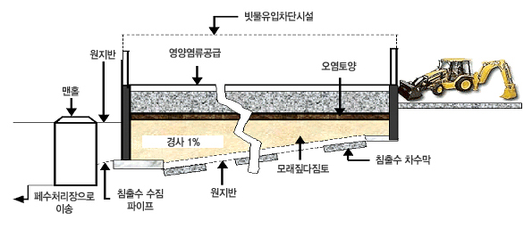
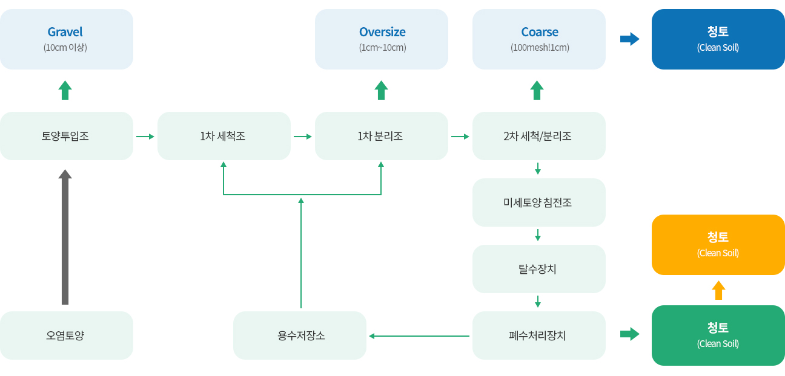
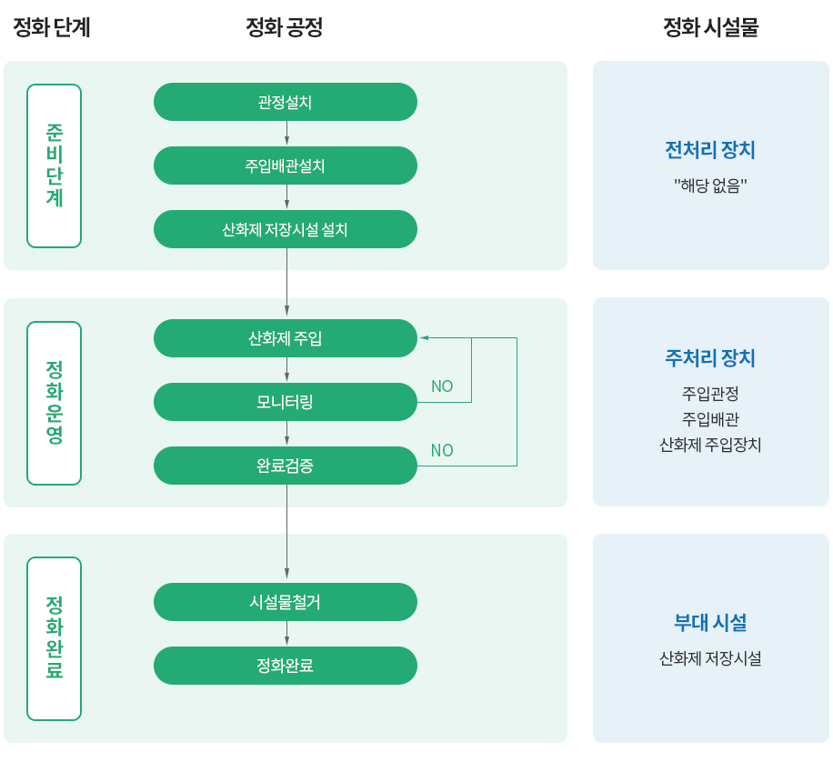
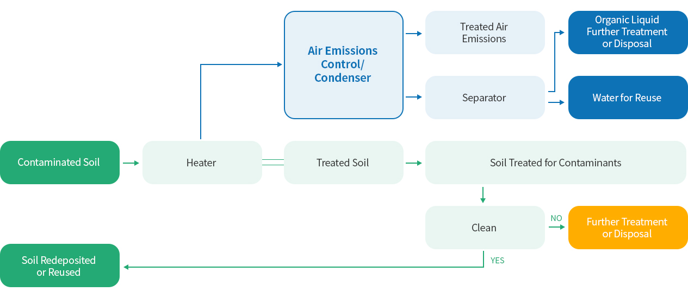

단면 도식(빗물유입차단시설·영양염류공급·오염토양·경사 1 %·모래 다짐토·침출수 차수막·수집 파이프·맨홀) 3D 개념 모델 · 앞쪽 절개 · 드래그 회전 · 구성 클릭 = 정보
토양환경·자원순환 / 토양·지하수 정화
조사→설계→정화→검증으로 이어지는 토양·지하수 정화. 오염 특성과 현장 여건에 맞춰 공법을 검토합니다.
지하수는 원위치 처리와 양수 후 처리 기술 범위로 소개되며, 모든 기술의 자사 실적을 뜻하지 않습니다.
공식 자료



굴착한 오염토양을 펼치고 정기적으로 뒤집어 산소를 공급합니다. 미생물의 호기성 생분해를 이용하며, 수분·영양분·온도 등 적용 조건을 검토합니다.
세척액과 기계적 마찰로 토양입자에 붙은 오염물질을 분리합니다. 토양의 입도와 점토 함량, 오염물질의 성질을 살펴 세척 조건을 검토합니다.
산화제와 환원제를 이용해 오염물질을 화학적으로 변화시키는 공법입니다. 오염물질의 구조와 농도, 토양 투수성 등을 고려해 적용성을 검토합니다.
오염토양을 가열해 유기오염물질을 기화·탈착시키는 지상처리 공법입니다. 토양 수분과 처리온도, 체류시간을 검토하고 배출가스 처리를 함께 고려합니다.